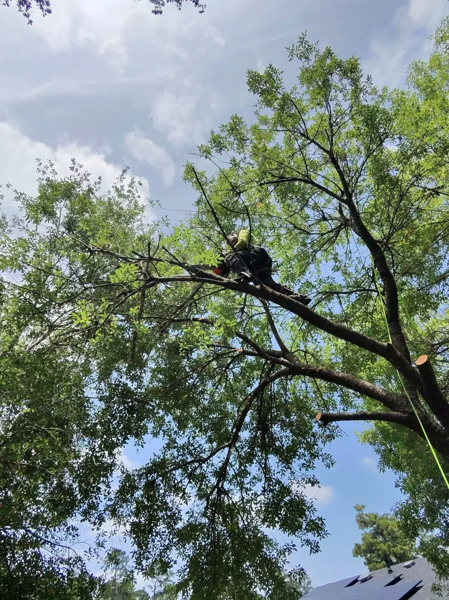

First-person work footage 1Meta-glasses video from this Jacinto City brush-clearing project.

Real projects across the Houston area
Our work speaks before we do.
Explore complete projects from Houston, Dayton and Cleveland—including first-person Meta-glasses footage from a recent brush-clearing job.
Request a free estimateProject gallery
More than one job. More than one kind of property.
Each section below represents real work completed for different customers and properties.
Recent Project 01 · Houston, TX
Residential Tree Trimming
A residential trimming project completed near a home, driveway and fence line, with the canopy reduced and the work area cleaned.
Request a similar service →Recent Project 02 · Dayton, TX
Large Oak Trimming & Removal
Technical oak work around a residence, garage, pool, fences and neighboring property using climbing, ropes and controlled cutting.
Request a similar service →Recent Project 03 · Houston near Jacinto City
Brush & Overgrowth Clearing
Dense brush, vines and small growth cleared from a residential property. This project includes first-person Meta-glasses footage showing the crew performing the work.
Request a similar service →First-person work footage 2Meta-glasses video from this Jacinto City brush-clearing project.
First-person work footage 3Meta-glasses video from this Jacinto City brush-clearing project.
Recent Project 04 · East Houston
Dead Limb & Hazardous Tree Work
Dead and hazardous limbs removed from a mature tree, followed by loading, haul-off and a clean final work area.
Request a similar service →Recent Project 05 · Houston near Downtown
Palm Tree Removal & Stump Grinding
Tall palm trees removed in a tight urban setting near homes, fences and utility lines, followed by stump grinding and site cleanup.
Request a similar service →Recent Project 06 · Cleveland, TX
Wooded Property Clearing & Chipping
Tree removal and clearing on a wooded property using climbing equipment, chainsaws and a commercial chipper to process material on site.
Request a similar service →Recent Project 07 · Dayton, TX
Acreage Tree Removal
A larger rural-property project involving multiple mature trees, open access, coordinated cutting and cleanup across the work zone.
Request a similar service →Project 01
Residential Tree Removal
Controlled cutting and rigging around roofs, yards, fences, and neighboring properties.
Project 02
Acreage & Multi-Tree Clearing
Large-property work involving multiple trees, open access, equipment movement, and full material handling.
Project 03
Technical Climbing & Removal
High-access work completed with ropes, positioning, controlled cuts, and careful protection of nearby structures.
Project 04
Fence-Line & Site Clearing
Trees, brush, stumps, and debris removed to prepare access for fencing and continued property work.
Project 05
Equipment, Chipping & Cleanup
The work is not finished when the tree comes down. Chipping, loading, hauling, and a clean final site complete the service.
Your property could be next